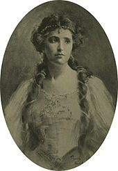

Toast
Overview
Jump to Brief History of Toast
Jump to Types of Toast
1) Regular Toast
2) French Toast
3) Melba Toast
Other Pages:
Places to Go
Image Gallery
References
A Brief History of Toast
“Toast” originates from the word “torrere” in Latin, which means “to burn.”
Dated back to the medieval times, toasting was a way of preserving
bread. In the 1400s, toast used to be used as flavouring in drinks, rather than food for people to eat.
Beginning in the 1850s, people began to know toast as a part of American cuisine, and ever since then, toast has become a regular portion of
people's daily meals, especially breakfasts.
The first “pop-up” toaster was called the Toastmaster and was made in 1926.
Types of Toast
Regular Toast
Items needed to make regular toast include:
- 2 Slices of Bread
- Jam/Sauce
- Knife
- Toaster
- Place the bread slices into the toaster holes.
- Turn the knob on the toaster to approximately 1-2 minutes for a nice golden colour.
- Push the toaster lever down until it clicks.
- Wait until the lever pops back up.
- Take the slices of bread out carefully, and spread the jam/sauce on it with a knife.
- Enjoy!
French Toast
French toast originated from Germany in the fourteenth-century. The name was known as “le pain perdu,” which
translates directly to “lost bread.”
Items needed to make French toast include:
- 2 Slices of Bread
- Eggs
- Milk
- Cream
- Sugar
- Cinammon
- Vanilla
- Jam/Sauce
- 1 Bowl
- Measuring Cup
- Measuring Spoon
- Whisk
- Knife
- Grill
- Begin by cracking one egg into the bowl for each 2-slice serving.
- Add 1/4 of a cup of milk into the cracked egg.
- Beat the egg, 1 tsp of vanilla, 1 tsp of sugar, and 1 tsp cinammon in the bowl with the whisk.
- Dip the slices of bread into the batter.
- Grill the bread slices for approximately 1-2 minutes.
- Spread the jam/sauce with the knife onto the toasted bread slices.
- Enjoy!
Melba Toast
Melba toast was named after an Australian opera singer, Dame Nellie Melba. A picture of her is on the right.

Items need to make Melba toast include:
- 2 Slices of Bread
- Jam/Sauce
- Cheese
- Bowl
- Knife
- Grill
- First, grill one side of the bread slices.
- Then, cut the slices laterally, and grill the other side of the bread slices.
- Heat up the cheese in the bowl for ten seconds in a microwave.
- Spread the cheese onto the bread slices.
- Spread the jam/sauce onto the bread slices.
- Enjoy!